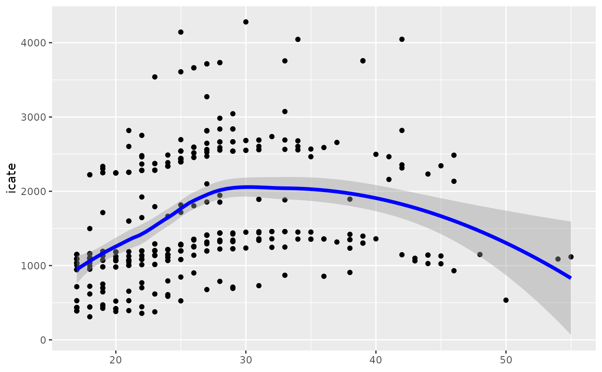

plot_moderator_c_loess.RdTODO: description
plot_moderator_c_loess(.model, moderator, line_color = "blue")a model produced by bartCause::bartc()
the moderator as a vector
the color of the loess line
ggplot object
data(lalonde)
confounders <- c('age', 'educ', 'black', 'hisp', 'married', 'nodegr')
model_results <- bartCause::bartc(
response = lalonde[['re78']],
treatment = lalonde[['treat']],
confounders = as.matrix(lalonde[, confounders]),
estimand = 'ate',
commonSuprule = 'none'
)
#> fitting treatment model via method 'bart'
#> fitting response model via method 'bart'
plot_moderator_c_loess(model_results, lalonde$married)
#> Warning: The `x` argument of `as_tibble.matrix()` must have unique column names if `.name_repair` is omitted as of tibble 2.0.0.
#> Using compatibility `.name_repair`.
#> This warning is displayed once every 8 hours.
#> Call `lifecycle::last_lifecycle_warnings()` to see where this warning was generated.
#> `geom_smooth()` using formula 'y ~ x'
#> Warning: at -0.005
#> Warning: radius 2.5e-05
#> Warning: all data on boundary of neighborhood. make span bigger
#> Warning: pseudoinverse used at -0.005
#> Warning: neighborhood radius 0.005
#> Warning: reciprocal condition number 1
#> Warning: There are other near singularities as well. 1.01
#> Warning: zero-width neighborhood. make span bigger
#> Warning: Computation failed in `stat_smooth()`:
#> NA/NaN/Inf in foreign function call (arg 5)
